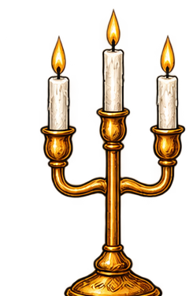
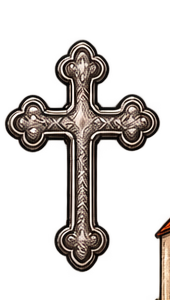
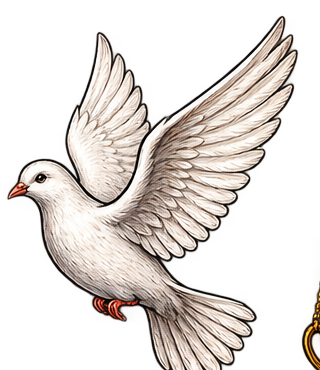

Card Frase del Giorno
Immagine ad alta risoluzione pronta per WhatsApp, Instagram e social network:
Una Parola per illuminare la giornata.
Giovedì 27 agosto 2026
Memoria di Santa Monica
«Vegliate, perché non sapete in quale giorno il Signore vostro verrà.»
Mt 24,42
oppure tira il cordino ↑
Ascolta la Prima Lettura, il Salmo, il Vangelo e la meditazione di Papa Francesco recitati con musica sacra

Prima Lettura — 1 Corinzi 1, 1-9
Dalla prima lettera di san Paolo apostolo ai Corìnzi
Salmo responsoriale — Dal Sal 144 (145)

Santo Vangelo — Matteo 24, 42-51
Dal Vangelo secondo Matteo
In quel tempo, Gesù disse ai suoi discepoli: «Vegliate, perché non sapete in quale giorno il Signore vostro verrà. Cercate di capire questo: se il padrone di casa sapesse a quale ora della notte viene il ladro, veglierebbe e non si lascerebbe scassinare la casa. Perciò anche voi tenetevi pronti perché, nell'ora che non immaginate, viene il Figlio dell'uomo. Chi è dunque il servo fidato e prudente, che il padrone ha messo a capo dei suoi domestici per dare loro il cibo a tempo debito? Beato quel servo che il padrone, arrivando, troverà ad agire così! Davvero io vi dico: lo metterà a capo di tutti i suoi beni. Ma se quel servo malvagio dicesse in cuor suo: "Il mio padrone tarda", e cominciasse a percuotere i suoi compagni e a mangiare e a bere con gli ubriaconi, il padrone di quel servo arriverà un giorno in cui non se l'aspetta e a un'ora che non sa, lo punirà severamente e gli infliggerà la sorte che meritano gli ipocriti: là sarà pianto e stridore di denti.»
La frase da portare con te
«Vegliate, perché non sapete in quale giorno il Signore vostro verrà.»
Mt 24,42

Papa Francesco
«Vegliare non significa avere materialmente gli occhi aperti, ma avere il cuore libero e rivolto nella direzione giusta, cioè disposto al dono e al servizio. Il sonno da cui dobbiamo svegliarci è costituito dall'indifferenza, dalla vanità, dall'incapacità di farsi carico del fratello solo, abbandonato o malato.»
Santa Monica — Memoria liturgica
Monica nacque nel 331 a Tagaste, nell'odierna Algeria, da una famiglia di salde tradizioni cristiane. Sposò Patrizio e dedicò gran parte della propria vita alla preghiera costante per la sua conversione e per quella del figlio Agostino. Lo accompagnò con pazienza tra Tagaste, Cartagine e Milano, dove vide Agostino battezzato da sant'Ambrogio. Morì a Ostia nel 387, serena per la conversione compiuta del figlio.
📝 La mia riflessione personale di oggi (salvata in privato sul dispositivo):
Tocca la lampadina per accendere la versione essenziale di oggi.
«Vegliate, perché non sapete in quale giorno il Signore vostro verrà.» (Mt 24,42)
Vegliare è avere il cuore libero e disposto al dono e al servizio del fratello.
Santa Monica pregò con costanza e amore per anni, testimoniando che la speranza non delude.
Fai oggi una sorpresa di bene a chi è solo o malato.
Signore Gesù, svegliaci dal sonno dell'indifferenza e riempi il nostro cuore della tua carità. Amen.
Signore Gesù, sveglia il nostro cuore dal sonno dell'indifferenza e della distrazione. Rendici vigilanti nell'amore, pronti a riconoscere i tuoi passi negli incontri di ogni giorno e generosi nel servire chi è solo o in difficoltà. Fa' risplendere in noi la luce della tua speranza.
Amen.
I Misteri di Oggi (Giovedì)
Contempliamo Gesù che, scendendo nell'acqua del Giordano, si fa solidale con l'umanità peccatrice e riceve la voce del Padre: «Questi è il Figlio mio prediletto».
Tocca i grani per avanzare nelle 10 Ave Maria:
Benedetto il Signore Dio d'Israele, perché ha visitato e redento il suo popolo, e ha suscitato per noi una salvezza potente nella casa di Davide, suo servo, come aveva detto per bocca dei suoi santi profeti d'un tempo: salvezza dai nostri nemici, e dalle mani di quanti ci odiano...
Grazie alla tenerezza e misericordia del nostro Dio, ci visiterà un sole che sorge dall'alto, per risplendere su quelli che stanno nelle tenebre e nell'ombra di morte, e dirigere i nostri passi sulla via della pace. Gloria al Padre...
Ora lascia, o Signore, che il tuo servo vada in pace, secondo la tua parola, perché i miei occhi hanno visto la tua salvezza, preparata da te davanti a tutti i popoli: luce per illuminare le genti e gloria del tuo popolo, Israele.
Custodiscici, Signore, nel sonno, veglia su di noi nella notte, perché riposiamo in pace e vegliamo con Cristo. Amen.
Scegli una data per visualizzare le letture, il Vangelo, l'audio di Vatican News e la meditazione del Papa:
Immagine ad alta risoluzione pronta per WhatsApp, Instagram e social network:
Tutte le frasi e le riflessioni spirituali salvate sul tuo dispositivo: